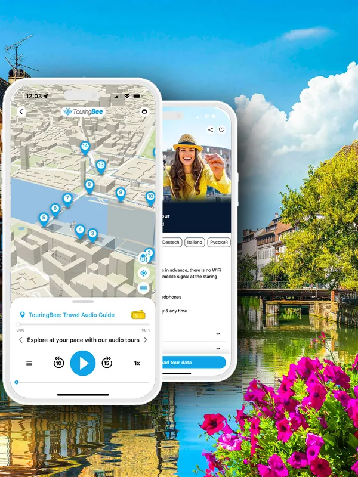

Petite France liegt an der Westspitze der Grande Île, der Insel mit der Straßburger Altstadt. Es gibt weder Eingang noch Eintritt, und die Grenzen des Viertels sind nirgends markiert. Man kann hindurchgehen und nur auf die Fassaden schauen. Wer aber weiß, wohin er blicken muss, entdeckt die offenen Dachböden unter den Dächern, die Türme am Wasser und das Wehr, von dessen Dach man einen der schönsten Blicke auf die Stadt hat.
Die TouringBee-Audiotour durch Straßburg hat in Petite France mehrere Stationen. Der Guide hilft, hinter den hübschen Fassaden die Geschichte eines Handwerkerviertels zu erkennen und zu verstehen, wie seine Brücken und Befestigungen funktionierten.

Straßburg: Audiotour auf eigene Faust Sofort verfügbar
Auf einen Blick
| Details | |
|---|---|
| Lage | Westspitze der Grande Île, etwa 15 Minuten zu Fuß vom Bahnhof |
| Eintritt | Frei: Gassen, Brücken, Ponts Couverts und Barrage Vauban kosten nichts |
| Hauptstraße | Rue du Bain-aux-Plantes |
| Aussichtsterrasse | Auf dem Dach des Barrage Vauban, kostenlos, Öffnungszeiten je nach Saison |
| Status | Teil des UNESCO-Welterbes „Grande Île“ seit 1988 |
Woher der Name kommt
Anfang des 16. Jahrhunderts wurde an diesem Ufer ein Spital für Menschen mit Syphilis eröffnet. Die Krankheit war gerade erst nach Europa gekommen, und im deutschsprachigen Raum nannte man sie die Franzosenkrankheit. So tauften die Einheimischen das Spital „Zum Französel“. Später ging der Name vom Gebäude auf das ganze Viertel über. Eine französische Gemeinde gab es hier nie.
Die Handwerker ließen sich aus einem anderen Grund an diesem Flussabschnitt nieder: Die Gerber nutzten das fließende Wasser, die Müller die Kraft der Strömung, und die Fischer hatten hier ihre Boote. Die Ill teilt sich an dieser Stelle in mehrere schneller fließende Arme. Außerdem verbreitete das Gerben einen so starken Geruch, dass es sinnvoll war, die Werkstätten vom Münster und den wohlhabenderen Straßen fernzuhalten. So wurde das Westende der Insel zum Arbeiterviertel.
Die Spuren sind bis heute sichtbar. Unter den steilen Dächern vieler Häuser öffnen sich Dachböden, die man leicht für Balkone hält. Dort wurden früher die Häute getrocknet. Das bekannteste Beispiel ist die Maison des Tanneurs in der Rue du Bain-aux-Plantes 42. Sie entstand aus mehreren Gebäuden des 16. Jahrhunderts, eines davon trägt die Jahreszahl 1572. Heute ist darin ein Restaurant mit elsässischer Küche.
Wie das Viertel aufgebaut ist
Vom Zentrum führt die Grand'Rue, eine der ältesten Straßen Straßburgs, in Richtung Petite France. Die Maison des Tanneurs steht an der Place Benjamin-Zix, benannt nach einem Straßburger Maler des frühen 19. Jahrhunderts. Hier beginnt die Hauptstraße des Viertels, die Rue du Bain-aux-Plantes. Ihr Name erinnert an eine öffentliche Badestube, die früher hier stand.
Auf der anderen Seite des Kanals verläuft die Rue des Moulins, die Straße der Müller. Heute ist fast in jedem ihrer Häuser ein Restaurant. Am Ende der Rue du Bain-aux-Plantes überquert der Pont du Faisan den Kanal und verbindet die beiden Straßen. Es ist eine Drehbrücke für Fußgänger: Nähert sich ein Ausflugsboot, schwenkt die Brücke zur Seite und gibt die Durchfahrt frei.
In diesen beiden Straßen und an den Ufern dazwischen stehen die Häuser von den Postkarten. In den Restaurants am Wasser bezahlt man zum Teil für die Aussicht. Wer etwas sparen möchte, geht besser in eine der traditionellen elsässischen Weinstuben, Winstub genannt, in den Nachbarstraßen.
Die schönsten Fassaden zeigen hier zum Wasser, nicht zur Straße. Deshalb lohnt es sich, auf einem Ufer des Kanals hinzugehen und auf dem anderen zurück: Auf beiden Seiten stehen andere Häuser. Zwischen den Armen der Ill sind alte Schleusen erhalten, und von der Brücke aus sieht man, wie die Boote von Batorama sie passieren.
Die Ponts Couverts
Am Westrand des Viertels stehen drei mächtige quadratische Türme aus dem 13. Jahrhundert, durch Brücken verbunden. Das sind die Ponts Couverts, die „gedeckten Brücken“, ein erhaltener Teil der mittelalterlichen Befestigung. Ursprünglich gab es vier Türme, doch einer davon, der Malzenturm, wurde 1869 abgerissen.
Über den Brücken verliefen einst überdachte Holzgalerien, sodass sich die Verteidiger der Stadt geschützt zwischen den Türmen bewegen konnten. Die Galerien wurden 1784 abgetragen, der Name blieb. Die heutigen Steinbrücken entstanden 1863 bis 1865, und jeder kann sie frei überqueren.
Die Türme hatten auch noch ein anderes, ganz und gar nicht romantisches Leben. Warum man sie erhielt, als sie die Stadt nicht mehr verteidigen konnten, erfahren Sie in der TouringBee-Audiotour.
Das Barrage Vauban und seine kostenlose Terrasse
Gegenüber den Ponts Couverts sperrt ein langer, niedriger Bau aus Sandstein auf dreizehn Bögen den Fluss. Man hält ihn leicht für eine gewöhnliche Brücke, doch es ist das Barrage Vauban, ein Stauwehr, das Ende des 17. Jahrhunderts nach den Plänen Vaubans entstand, des obersten Festungsbaumeisters Ludwigs XIV. Jeder Bogen hatte Schütze. Ließ man sie herab, stieg die Ill und überflutete das Vorfeld der Stadt im Süden.
Im Inneren des Wehrs verläuft eine überdachte Galerie mit historischen Skulpturen und Abgüssen, die mit dem Straßburger Münster verbunden sind. Am Ende der Galerie führt eine Treppe zu einer Panoramaterrasse, die sich über die ganze Länge des Wehrs erstreckt. Sie wurde 1966 eröffnet. Vor Ihnen liegen die Ponts Couverts, dahinter die Dächer von Petite France und über allem die Turmspitze des Münsters. Vom Ufer aus wirkt das Wehr eher unscheinbar, also gehen Sie für diesen Blick durch die Galerie und steigen Sie auf die Terrasse.
Auch das Straßburger Münster hat eine Aussichtsplattform mit weitem Blick über die Stadt. Dorthin muss man aber 330 Stufen steigen und Eintritt zahlen. Die Terrasse auf dem Barrage Vauban ist dagegen kostenlos.
| Terrasse des Barrage Vauban | Öffnungszeiten |
|---|---|
| Mai–August | 07:15–21:00 |
| September–Oktober, März–April | 08:00–19:00 |
| November–Februar | 08:30–16:00 |
Der untere Durchgang durch das Wehr ist täglich von 06:00 bis 21:00 geöffnet. Zur Terrasse führt auch ein Aufzug, doch 2026 liefen Arbeiten zum Austausch von Aufzug und Treppen. Prüfen Sie vor dem Besuch auf der Website der Stadt Straßburg, ob der Aufzug in Betrieb ist und wann die Terrasse geöffnet hat.
Wann man kommen sollte
Früh am Morgen. Im Viertel ist es meist ruhiger, und bei Windstille spiegeln sich die Fachwerkfassaden schön im Wasser.
Am späten Nachmittag. Die tief stehende Sonne scheint von Westen entlang der Kanäle und taucht die Fachwerkfassaden in warmes Licht. Eine gute Zeit für die Terrasse auf dem Wehr, nur schließt sie im Winter um 16:00.
Sommernachmittage. Vom späten Vormittag bis zum Abend ist im Viertel viel los. Die Rue du Bain-aux-Plantes ist schmal, und eine einzige Reisegruppe kann sie eine Weile blockieren.
Im Dezember. Die Restaurants in der Rue des Moulins überbieten sich mit dem Schmuck ihrer Fassaden, und das Viertel wirkt besonders festlich. Am Nachmittag kann es aber sehr voll werden, und in den schmalen Gassen kann man nirgends ausweichen. Wenn Sie zum Weihnachtsmarkt kommen, besuchen Sie Petite France am Vormittag.
Bei Regen. Das nasse Kopfsteinpflaster glänzt, es sind weniger Besucher unterwegs, und die überdachte Galerie des Barrage Vauban bietet einen bequemen Unterschlupf.
Wo man fotografiert
Das bekannteste Foto von Petite France entsteht nicht im Viertel selbst, sondern auf den Ponts Couverts: Stellen Sie sich auf die Brücke zwischen den Türmen und schauen Sie nach Osten. Im Bild sind dann Fachwerkhäuser, Wasser, eine Schleuse und die Turmspitze des Münsters.
Ein paar weitere Fotopunkte:
- Die Terrasse des Barrage Vauban — ein weites Panorama mit Türmen, Wasser und Dächern, besonders am späten Nachmittag.
- Der Pont du Faisan — von der Mitte der Brücke sieht man die Kanäle in beide Richtungen.
- Der Pont Saint-Martin, gleich östlich des Viertels — ein schöner Blick auf die alten Mühlen und ihre Wehre. Einst wurde hier hart gearbeitet, doch später begann für die Mühlen ein ganz anderes Leben. Diese Geschichte hören Sie in der TouringBee-Audiotour zum Selbstgehen.
Petite France mit Audioguide
Die TouringBee-Audiotour beginnt in der Nähe des Bahnhofs und führt durch Petite France, über die Ponts Couverts und zum Barrage Vauban. Sie starten, wann Sie möchten, und spielen jede Aufnahme ab, wenn Sie an der Station angekommen sind. In Petite France ist das besonders praktisch: Bleiben Sie auf der Terrasse des Wehrs, genießen Sie den Blick im Abendlicht und gehen Sie danach in Ruhe weiter.
- 33 Stationen, rund 2,5 Stunden im eigenen Tempo, Aufnahmen von 1 bis 3 Minuten.
- Ab €9,99, einmalige Zahlung, ein Jahr Zugang, 8 Sprachen.
- Laden Sie die Tour vorab herunter, dann nutzen Sie Karte und Aufnahmen ohne Internetverbindung.
- Die Karte zeigt Ihren Standort und hilft, die Stationen der Route zu finden.
Vom Wasser aus sieht Petite France anders aus: Das Boot fährt durch die Schleusen, und zu beiden Seiten des Kanals ragen die Fachwerkhäuser auf. Solche Fahrten finden Sie unter den Bootstouren in Straßburg bei GetYourGuide. Und wenn Sie das Viertel früh am Morgen erleben möchten, solange die Gassen noch fast leer sind, übernachten Sie gleich hier. Einige der alten Häuser sind heute Hotels, Sie finden sie unter den Unterkünften in Straßburg bei Booking.com.
Anreise
Petite France liegt etwa 15 Minuten zu Fuß vom Bahnhof entfernt und ist damit ein naheliegender Ausgangspunkt, um Straßburg zu erkunden. Vom Münster aus ist der Weg ungefähr gleich lang. Wenn Sie die Zugreise aus Paris, Frankfurt oder Basel noch planen, finden Sie Fahrpläne und Tickets bequem bei SNCF Connect.
Unterwegs nach Petite France?
Petite France passt fast vollständig in zwei Straßen und ein paar Brücken. Wer aber weiß, dass unter diesen Dächern Häute getrocknet wurden, dass der Name auf ein Spital zurückgeht und dass die Türme am Wasser ein erhaltener Teil der mittelalterlichen Befestigung sind, sieht im Viertel mehr als ein hübsches Bild. Und bleiben Sie nicht an den Ponts Couverts stehen: Gehen Sie hinüber zum Wehr, steigen Sie auf die Terrasse und schauen Sie von oben auf das ganze Viertel.
Häufige Fragen
Warum heißt das Viertel Petite France?
Anfang des 16. Jahrhunderts wurde hier ein Spital für Menschen mit Syphilis eröffnet. Im deutschsprachigen Raum nannte man die Krankheit damals die Franzosenkrankheit. Die Einheimischen tauften das Spital „Zum Französel“, und später ging der Name auf das ganze Viertel über.
Was kostet der Besuch von Petite France?
Nichts. Gassen, Brücken, Ponts Couverts und die Terrasse des Barrage Vauban sind kostenlos.
Was sind die Ponts Couverts?
Eine Gruppe von Brücken und drei erhaltenen Wehrtürmen aus dem 13. Jahrhundert am Westrand von Petite France. Ein vierter Turm wurde 1869 abgerissen. Der Name geht auf die überdachten Holzgalerien über den Brücken zurück, die 1784 abgetragen wurden.
Kann man auf das Barrage Vauban hinauf?
Ja, kostenlos. Durch die überdachte Galerie mit Skulpturen und Abgüssen zur Geschichte des Münsters geht es zur Treppe, die auf die Terrasse führt. Die Terrasse ist im Sommer von 07:15 bis 21:00 und im Winter von 08:30 bis 16:00 geöffnet.
Wann besucht man Petite France am besten?
Früh am Morgen, wenn es im Viertel meist ruhiger ist, oder am späten Nachmittag wegen des weichen Lichts. An Sommernachmittagen und im Dezember nach dem Mittagessen sind deutlich mehr Menschen unterwegs.
Wo ist der beste Fotopunkt?
Auf den Ponts Couverts mit Blick nach Osten: Im Bild sind Fachwerkhäuser, Wasser und die Turmspitze des Münsters. Das weite Panorama bietet die Terrasse des Barrage Vauban.
Weiterlesen
- Straßburg zu Fuß – eine kostenlose Route durchs Zentrum, die durch Petite France führt
- Ein Tag in Straßburg – eine Route, die um die Vorführung der Astronomischen Uhr um 12:30 geplant ist
- Das Straßburger Münster – die Turmspitze, die man von der Terrasse des Wehrs sieht
- Der Straßburger Weihnachtsmarkt – wo die Märkte stehen und wie die Stadt im Dezember funktioniert
Die Audiotouren von TouringBee sind unser eigenes Produkt. Links zu GetYourGuide, Booking.com und SNCF Connect sind Affiliate-Links: Wenn Sie darüber buchen, erhalten wir eventuell eine kleine Provision, ohne Mehrkosten für Sie. Unsere Empfehlungen beeinflusst das nie.